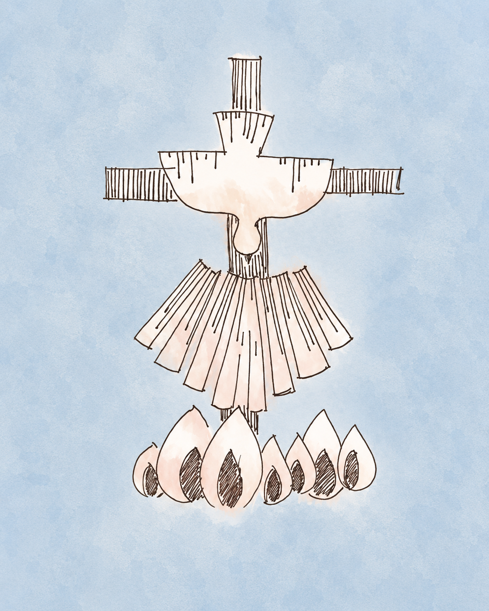

SACRAMENTOS
CONFIRMACIÓN
QUE ES?
La Confirmación es uno de los sacramentos de la iniciación cristiana, junto con el Bautismo y la Eucaristía. Por medio de este sacramento, el bautizado recibe de manera especial el don del Espíritu Santo, fortalece su vínculo con la Iglesia y queda llamado a vivir y dar testimonio de la fe cristiana con mayor compromiso.
La Iglesia enseña que la Confirmación perfecciona la gracia bautismal, une más firmemente a Cristo y a la Iglesia, fortalece con los dones del Espíritu Santo y ayuda al cristiano a difundir y defender la fe con sus palabras y obras.
QUIENES PUEDEN RECIBIRLO?
Puede recibir la Confirmación toda persona bautizada que aún no haya sido confirmada. Para recibirla, fuera del peligro de muerte, se requiere una preparación adecuada, estar debidamente dispuesto y poder renovar las promesas bautismales.
En general, los niños, adolescentes, jóvenes o adultos que deseen confirmarse realizan previamente un camino de catequesis y preparación. Este proceso ayuda a comprender el significado del sacramento, la acción del Espíritu Santo, la pertenencia a la Iglesia y el compromiso de vivir la fe en la vida cotidiana.
COMO SE PUEDE EN NUESTRA PARROQUIA?
Consultar en secretaría parroquial para conocer los requisitos, inscripción a catequesis y fechas disponibles.
